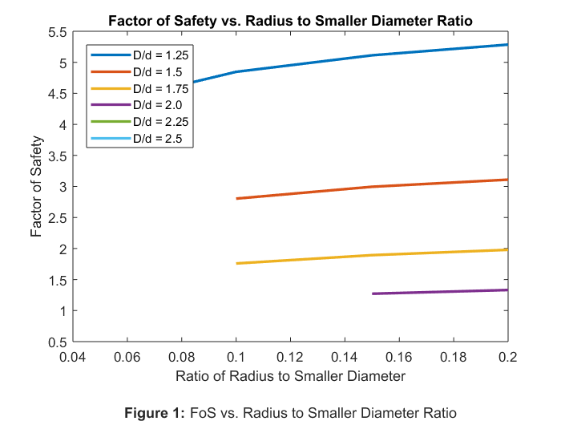

RAHUL GOYAL LAB5
ME 328 Fall 2018 - Lab Assignment #5
Author: RAHUL GOYAL
California Polytechnic State University, San Luis Obispo, CA
Date Created: December 04, 2018
Date Modified: December 11, 2018
Description: The critical section for fatigue failure on a shaft has been determined to be the location of the notch radius. To aid in the design of the shaft generate curves showing the effect on the factor of safety of varying the diameter of the stepped down portion, d, and the radius of the notch, r.
Contents
Reset
close all; clear all; clc;
Constants / Given Values
% Ratios of larger diameter to smaller diameter D_d = [1.25, 1.5, 1.75, 2.0, 2.25, 2.5]; % Ratios of radius to smaller diameter r_d = [0.05, 0.10, 0.15, 0.20];
Input Parameters
D = 3; % Larger diameter (in) L = 5; % Shaft length (in) a = 10; % Lever length (in) P_a = 0.75; % Alternating force (kips) P_m = 1.5; % Mean force (kips) S_ut = 210; % Strength, ultimate (ksi) S_y = 180; % Strength, yield (ksi) % k_a = 1.34*S_ut^-0.085; % Surface Factor (ground) k_a = 2.70*S_ut^-0.265; % Surface Factor (machined)
Analysis
% Create factor of safety matrix FoS = zeros(length(D_d), length(r_d)); S_ep = S_ut / 2; % Endurance Limit Prime (ksi) if S_ep > 100 S_ep = 100; end k_c = 1; % Loading Factor k_d = 1; % Temperature Factor k_e = 1; % Reliability Factor for i = 1:length(D_d) d = D / D_d(i); % Smaller diameter (in) % Size Factor (k_b) if (0.11 <= d) && (d <= 2) k_b = (d/0.3)^-0.107; elseif (0.2 < d) && (d <= 10) k_b = 0.91*d^-0.157; else k_b = 0; disp("Stepped-down diameter out of range for k_b calculation!"); disp("The stepped-down diameter is: " + d); end % Enduance Limit (ksi) S_e = S_ep * k_a * k_b * k_c * k_d * k_e; % Alternating Stresses (ksi) % Stress from Bending [M * c / I] (ksi) sigma_a = (P_a*L) * (d/2) / (pi/4*(d/2)^4); % Stress from Torsion [T * r / J] (ksi) tau_a = (P_a*a) * (d/2) / (pi/2*(d/2)^4); % Alternating Stress Prime (ksi) % Changes with notch radius, calculated below. % Mean Stresses (ksi) % Stress from Bending ]M * c / I] (ksi) sigma_m = (P_m*L) * (d/2) / (pi/4*(d/2)^4); % Stress from Torsion [T * r / J] (ksi) tau_m = (P_m*a) * (d/2) / (pi/2*(d/2)^4); % Mean Stress Prime (ksi) sigma_mp = sqrt(sigma_m^2 + 3*tau_m^2); % Miscellaneous Factors (k_f) h = (D - d) / 2; % Step height (in) for j = 1:length(r_d) r = r_d(j) * d; % Notch radius (in) % Stress Concentration Factor % https://www.amesweb.info/ % StressConcentrationFactor/SteppedShaftWithShoulderFillet.aspx % Bending if (0.1 <= h/r) && (h/r <= 2.0) C_1 = 0.947 + 1.206*sqrt(h/r) - 0.131*h/r; C_2 = 0.022 - 3.405*sqrt(h/r) + 0.915*h/r; C_3 = 0.869 + 1.777*sqrt(h/r) - 0.555*h/r; C_4 = -0.810 + 0.422*sqrt(h/r) - 0.260*h/r; k_t = C_1 + C_2*(2*h/D) + C_3*(2*h/D)^2 + C_4*(2*h/D)^3; elseif (2.0 < h/r) && (h/r <= 20.0) C_1 = 1.232 + 0.832*sqrt(h/r) - 0.008*h/r; C_2 = -3.813 + 0.968*sqrt(h/r) - 0.260*h/r; C_3 = 7.423 - 4.868*sqrt(h/r) + 0.869*h/r; C_4 = -3.839 + 3.070*sqrt(h/r) - 0.600*h/r; k_t = C_1 + C_2*(2*h/D) + C_3*(2*h/D)^2 + C_4*(2*h/D)^3; else k_t = 0; disp("h/r ratio out of range for k_t calculation!"); disp("The h/r ratio is: " + h/r); end % Torsion if (0.25 <= h/r) && (h/r <= 4.0) C_1 = 0.905 + 0.783*sqrt(h/r) - 0.075*h/r; C_2 = -0.437 - 1.969*sqrt(h/r) + 0.553*h/r; C_3 = 1.557 + 1.073*sqrt(h/r) - 0.578*h/r; C_4 = -1.061 + 0.171*sqrt(h/r) + 0.086*h/r; k_ts = C_1 + C_2*(2*h/D) + C_3*(2*h/D)^2 + C_4*(2*h/D)^3; % elseif h/r > 4.0 % C_1 = 0.905 + 0.783*sqrt(h/r) - 0.075*h/r; % C_2 = -0.437 - 1.969*sqrt(h/r) + 0.553*h/r; % C_3 = 1.557 + 1.073*sqrt(h/r) - 0.578*h/r; % C_4 = -1.061 + 0.171*sqrt(h/r) + 0.086*h/r; % k_ts = C_1 + C_2*(2*h/D) + C_3*(2*h/D)^2 + C_4*(2*h/D)^3; else k_ts = 0; disp("h/r ratio out of range for k_ts calculation!"); disp("The h/r ratio is: " + h/r); end % Notch Sensitivity % Bending sqrt_a = 0.246 - 3.08E-3*S_ut + 1.51E-5*S_ut^2 - 2.67E-8*S_ut^3; q = 1 / (1 + sqrt_a/sqrt(r)); if k_t k_f = q*(k_t - 1) + 1; else k_f = 0; end % Torsion sqrt_as = 0.190 - 2.51E-3*S_ut + 1.35E-5*S_ut^2 - 2.67E-8*S_ut^3; qs = 1 / (1 + sqrt_as/sqrt(r)); if k_ts k_fs = qs*(k_ts - 1) + 1; else k_fs = 0; end % Alternating Stress Prime (ksi) sigma_ap = sqrt((k_f*sigma_a)^2 + 3*(k_fs*tau_a)^2); % Factor of Safety (Modified Goodman) if k_b && k_f && k_fs FoS_MG = (sigma_ap/S_e + sigma_mp/S_ut)^-1; else FoS_MG = 0; end % Factor of Safety (Langer Static Yield) FoS_LSY = S_y / (sigma_ap + sigma_mp); % Factor of Safety FoS(i, j) = min(FoS_MG, FoS_LSY); if ~FoS(i, j) FoS(i, j) = NaN; end end end % Plot plot(r_d, FoS, 'LineWidth', 2); title("Factor of Safety vs. Radius to Smaller Diameter Ratio (No Extrapolations)"); xlabel({'Ratio of Radius to Smaller Diameter' '' % Figure label '\bfFigure 1: \rmFoS vs. Radius to Smaller Diameter Ratio (No Extrapolations)'}); ylabel("Factor of Safety");
h/r ratio out of range for k_ts calculation! The h/r ratio is: 5 h/r ratio out of range for k_ts calculation! The h/r ratio is: 7.5 h/r ratio out of range for k_ts calculation! The h/r ratio is: 10 h/r ratio out of range for k_ts calculation! The h/r ratio is: 5 h/r ratio out of range for k_ts calculation! The h/r ratio is: 12.5 h/r ratio out of range for k_ts calculation! The h/r ratio is: 6.25 h/r ratio out of range for k_ts calculation! The h/r ratio is: 4.1667 h/r ratio out of range for k_ts calculation! The h/r ratio is: 15 h/r ratio out of range for k_ts calculation! The h/r ratio is: 7.5 h/r ratio out of range for k_ts calculation! The h/r ratio is: 5